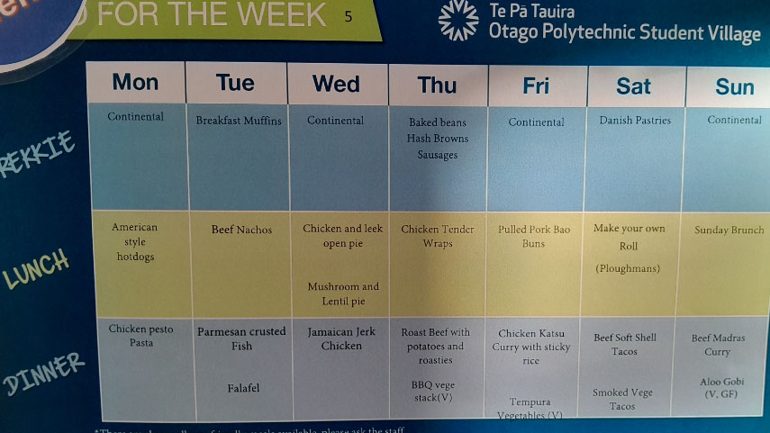
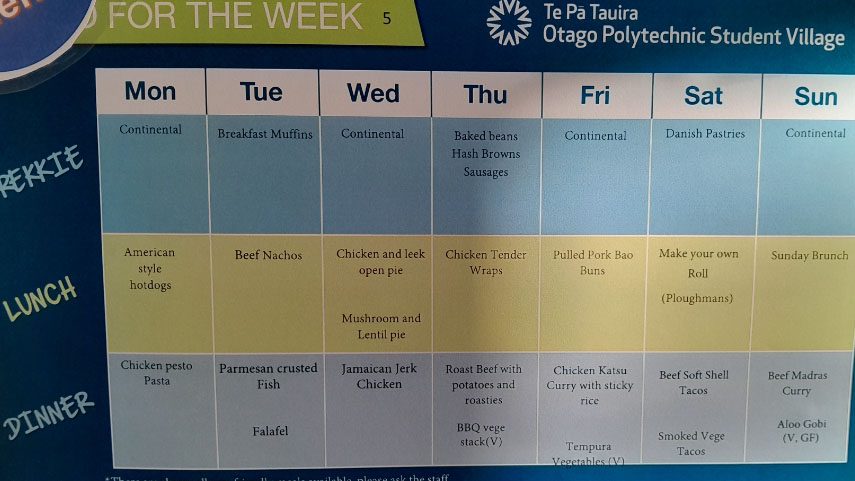

Catering Options
Dorm rooms are automatically put into the catering option, however the other room situations have the option of choice. Our dining hall is filled with the Otago polytechnics best chefs, and they serve some of the best dished food, and have plenty of variety within them too. There is also unlimited drink refills, free fruit to take, always toast and spreads avaliable and take away containers if you want extras to bring back to your room for later!
Catering Requirements
Catering requirements are taken very seriously here at the Otago Polytechnic Student Village. The chefs ensure to have meal options avaliable to those who need dairy-free, gluten-free, vegetarian, vegan options and more. This requirements is covered through all meals throughout the day, as well as the desserts and drinks.
The menu's for this year: take a sneak peak to what sorts you may encounter next year
Although it doesnt say on the menus, there are desserts given to students approximately 40% of the time, during both lunch and dinner. These are not written on the menus as these desserts chnage often, and it depends on what chefs are working and how much time they have to make a dessert. there is a good mixture and rnage of swets, including: various cakes, icecreams, cultural desserts, rice pudding, fruit salad, cookies, muffins, cupcakes, apple crumble, ambrosia and more!
 

Packed and late meal collections
If you know you wont make it to lunch or dinner, there are two options for you:
- A 'Packed Meal' Where they pack the meal for you, and you collect it from the dining hall at any time prior.
- A 'Late Meal' where they pack the meal for you and hold it for you in the office kitchen area until you come to collect it.